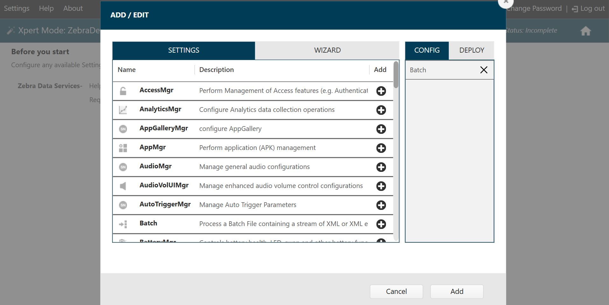

Overview
This section discusses installation and setup of Device Tracker. The client app (APK file) can be downloaded from the Zebra support portal. Zebra’s StageNow tool or an EMM can be used for deployment to the mobile devices.
Installation and setup on the device:
- Install client APK file and ensure all permissions are granted.
- Disable battery optimization to permit the app to continue running in the background during doze mode (Android’s power-saving feature triggered when the device is in a prolonged suspended state).
- Allow overlay permission (optional). If the Device Check-out feature is required to prevent users from accessing the device prior to scanning their unique user barcode, automatically allow the overlay permission to avoid manual intervention during setup.
- Launch the app by starting the app service.
- Deploy server settings to communicate with the cloud server.
- Enable secondary BLE beacon, if supported by the device, for the device to be located when powered off.
Execute steps 1 to 4 by creating a StageNow installation profile.
Execute step 5 by creating a StageNow server connectivity profile.
Execute step 6 by creating a StageNow BLE profile.
Requirements
See Requirements.
StageNow Profiles
This section provides procedures to create three separate StageNow profiles for deployment: installation, server connectivity and BLE. Zebra’s StageNow tool or an EMM can be used for device deployment. StageNow version 4.2 or higher is required if automatically bypassing the overlay permission for the optional Check-out feature. See Zebra downloads for the StageNow install file.
Installation Profile
Create a StageNow installation profile to install and setup the Device Tracker client as described in the overview. If using the Device Check-out feature, before proceeding follow Extract Client App Certificate, a prerequisite to automatically allow the overlay permission.
To create a StageNow installation profile:
- Open StageNow on a host computer.
- In the StageNow home screen, click Create New Profile from the left menu.
- Ensure MX version 8.0 or higher is selected at the top drop-down selector. The MX version on the device should match this or higher. See MX documentation for instructions how to check the version. If automatically bypassing the overlay permission for Check-out, select MX 10.0 or higher.
- Select Xpert Mode from the list and click Create.
 Wizard selection
Wizard selection - Enter the profile name. Click Start.
- If using StageNow to copy the install file to the device, scroll down and click the plus (+) sign next to FileMgr. This adds FileMgr to the Config tab on the right side.
- Scroll to AppMgr and click the plus (+) sign next to it. This adds AppMgr to the Config tab on the right side.
- Repeat step 7 again. AppMgr is listed twice in the Config tab.
- If automatically bypassing the screen overlay permission, scroll to AccessMgr and click the plus (+) sign next to it. This adds AccessMgr to the Config tab on the right side.
- Scroll to Intent and click the plus (+) sign next to it. This adds Intent to the Config tab on the right side.
- If using EMM for device deployment, skip this step and proceed to step 13. Scroll to find ConditionMgr and click the plus (+) sign next to it. This adds ConditionMgr to the Config tab on the right side.
 Installation profile - config settings
Installation profile - config settings - Click Add.
- If using StageNow to copy the install file to the device, proceed with this step. Otherwise, skip to step 14.
StageNow Config 1 - Copy the install file to the device with FileMgr. In the FileMgr screen under the Create New Setting tab, select and enter the desired options to install the APK, for example:
• File Action: Transfer/Copy File
• Target Access Method: File in the device file system
• Target Path and File Name: [enter file path]
• Source Access Method: [select applicable method]
• Source File URI: [enter information prompted]
Click Continue. - StageNow Config 2 – Install the client app. For the first AppMgr, select the following:
• Action: Install
Enter/select the desired options for the remaining fields. Click Continue. - StageNow Config 3 – Battery Optimization. For the second AppMgr, enter/select the following:
• Action: Application for Battery Optimization
• Remove Application for Battery Optimization: com.zebra.devicetrackercloud
Click Continue. - StageNow Config 4 – Grant overlay permission. For AccessMgr, enter the following:
• Permission Access Action: Grant Permission to an Application
• Permission Name: System Alert Window
• Application Package Name: com.zebra.devicetrackercloud
• Application Signature: [path of certificate file extracted (see Extract Client App Certificate below)] - StageNow Config 5 – Launch NGDTCspService with an intent. For Intent, enter/select the following:
• Action: StartService
• Android Action Name: com.zebra.devicetrackercloud.csp.NGDTCspService
• Package Name: com.zebra.devicetrackercloud
• Class Name: com.zebra.devicetrackercloud.csp.NGDTCspService
Click Continue. - If using EMM for device deployment, skip this step and proceed to step 19.
StageNow Config 6 – Add a delay for the app to be ready to accept configurations. In the ConditionMgr screen under the “Create New Setting” tab, enter/select the following:
• Data Type: Integer
• Integer System Value: Battery Level
• Integer Condition Test: Equal-to a Constant Integer
• Integer Constant Value: 0
• Condition Met Action: Success
• Condition Not Met Action: Retry
• Condition Repeat Count: 5
• Condition Repeat Interval: 1
• Condition Fail Message: [enter message text]
• Suppress the error message: enable
This sets the condition such that if the battery level is not 0, it retries 5 times with an interval of 1 second for each retry. The end result is a 5 second delay. - Click Complete Profiles. Profile creation is complete.
- Continue to Device Deployment section.
Extract Client App Certificate
If using the Device Check-out feature, the Device Tracker certificate must be extracted as a pre-requisite to creating the StageNow installation profile in order to automatically grant the screen overlay permission. This prevents the screen overlay detected warning from appearing to the end user.
Steps to extract the client app certificate:
- Download SigTools.jar from Zebra’s App Signature Tools.
- Follow the instructions provided from the link to extract the certificate from Device Tracker’s APK file using command:
java -jar SigTools.jar GetCert -INFORM APK -OUTFORM DER -IN [filename.apk] -OUTFILE [filename.crt]
where [filename.apk] is the full path and file name of the Device Tracker APK install file and [filename.crt] is the designated certificate file name. The file extensions should be preserved in both file names. - The certificate file is extracted as the CRT file.
The certificate file is needed to create the StageNow Installation Profile.
Server Connectivity Profile
Create a StageNow server connectivity profile to apply server settings in the app client for it to communicate with the server. The server configuration XML file is required, supplied by Zebra.
Steps to create a StageNow server connectivity profile:
- Open StageNow on a host computer.
- In the StageNow home screen, click Create New Profile from the left menu.
- Ensure the proper MX version is selected at the top drop-down selector. This should match the MX version on the device. See MX documentation for instructions how to check the version. Select Xpert Mode from the list and click Create.
Wizard selection
- Enter the profile name. Click Start.
- Find Batch and click the plus (+) sign next to it. This adds Batch to the Config tab on the right side. Server connectivity profile - config setting
- Click Add. In the Batch screen, select the following:
• Batch Action: Execute Batch
• Batch File Type: XML File
• Batch File Access Method: File embedded in XML
• XML File Data: [browse to the server configuration XML file supplied from Zebra services] - Click Continue.
- Click Complete Profiles.
- Continue to Device Deployment section.
Note: If an enterprise reset is performed on the device, the server settings must be re-applied for communication with the server.
BLE Profile
Create a StageNow profile to enable the secondary BLE beacon, if supported by the device, so the device can be located when powered off.
To create the BLE profile:
- Open StageNow on a host computer.
- In the StageNow home screen, click Create New Profile from the left menu.
- Ensure the proper MX version, MX 10.2 or higher, is selected at the top drop-down selector. See MX documentation for instructions how to check the version. Select Xpert Mode from the list and click Create.
Wizard selection
- Enter the profile name. Click Start.
- Find BeaconMgr and click the plus (+) sign next to it. This adds BeaconMgr to the Config tab on the right side.
 Add config setting
Add config setting - Click Add. In the BeaconMgr screen, select the following:
• Beaconing: Turn ON
• Beaconing in Airplane Mode: Turn ON
• Beacon type: AltBeacon
• Explicit Beacon UUID?: [uncheck checkbox]
• AltBeacon ID1: EBEB
• AltBeacon ID2: ECDD
• Transmission (Tx) Power Level: High (1 dBm)
• Transmission (Tx) Interval: Low Latency (100 ms) - Click Continue.
- Click Complete Profiles.
- Continue to Device Deployment section. Ensure devices are connected to the network and can connect to the server for at least 5 minutes during the intial setup.
See Beacon Manager CSP documentation for more information.
Device Deployment
The device must be connected to the network during deployment. After creating the StageNow profiles, use one of the following methods based on the desired tool for device deployment:
- StageNow: Generate the barcode from the StageNow profile. Open StageNow client on the device and scan the barcode(s) generated from the installation, configuration and/or BLE profile.
- EMM: Export each StageNow XML file from the StageNow installation, connection and BLE profiles. Do not edit the XML file - it can cause unexpected behavior. Send the XML using either OEMConfig or MX to configure the app and grant all required permissions. The installation profile and server connectivity profile XML files must be used separately.
After deploying the installation and server connectivity profiles, reboot the device. Once the app is started on Android O or higher devices, a Device Tracker notification message is displayed in the device notification drawer. This notification cannot be dismissed, indicating that Device Tracker is running in the background.